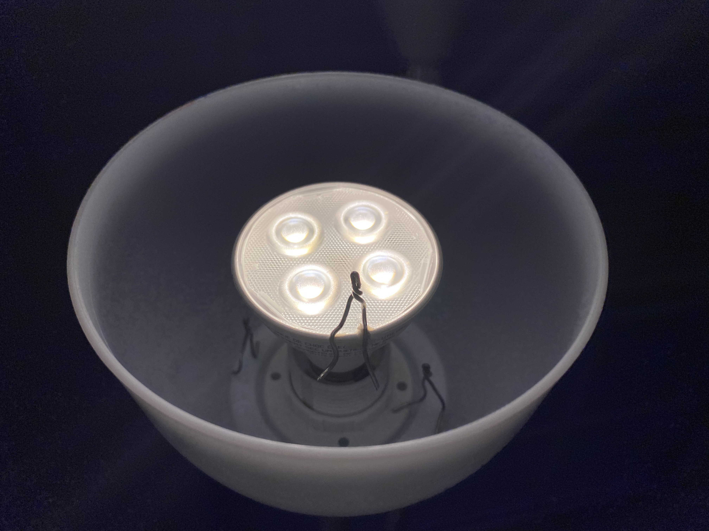
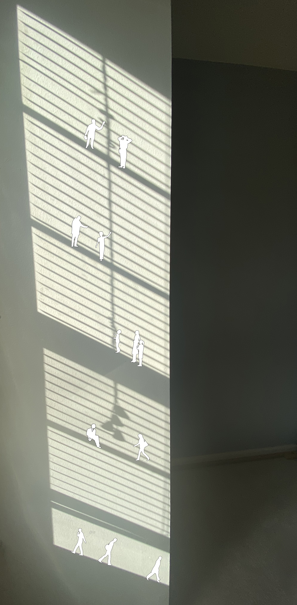
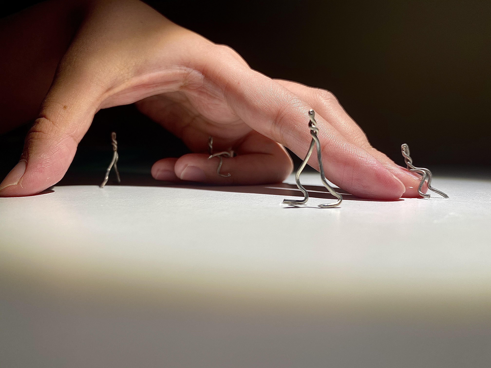

#TinyArchitect Contest Entrees
-
Inside of the Lamp
Architecture is everywhere.
It can be found not only outside of ordinary objects but inside of them.
I made my small human figures by twisting wire. -
The Momentary Architecture
Architecture is everywhere.
I found this architecture created by a shadow on the wall. Its form and tone kept changing every single moment. We don't see the same shape and tone again in this architecture. Therefore, this is “the Momentary Architecture.” I believe the shadow can be thought as the ordinary object since we consciously/unconsciously see, find, and interact with them everyday. -
The Momentary Architecture 2
Architecture is everywhere.
I found this architecture created by a shadow on the wall. Its figure appears only in the morning. So, it’s “the Momentary Architecture.” I believe the shadow can be thought as the ordinary object since we consciously/unconsciously see, find, and interact with them everyday.
I used this people silhouettes vector free pack for my work HERE.
I made my small human figures by twisting wire. -
Hand Pavilion
